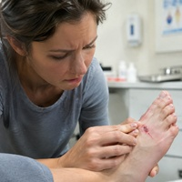

DIABETES EDITION
7
WARNING SIGNS YOU SHOULD NOT IGNORE
Symptoms
Blood Tests
Excessive thirst &|frequent urination
1
HbA1c
2
Fasting Blood Glucose
3
Random Blood Glucose
Slow-healing|wounds

1
HbA1c
2
Fasting Blood Glucose
3
Random Blood Glucose
Tingling or|numbness in feet
1
HbA1c
2
Fasting Blood Glucose
3
Vitamin B12
(when clinically indicated)
Unexplained|weight loss &|increased hunger
1
HbA1c
2
Fasting Blood Glucose
3
Random Blood Glucose
SAVE
THIS REEL
FOLLOW
@PRITISDIETCLINIC
Share this with someone who needs to check their blood sugar.
Priti's Diet Clinic